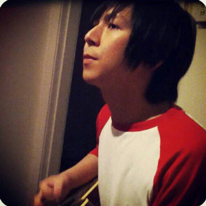

<div id="loadContentFrom">

  <!--top slide show-->

  <div id="fullscreen-cover" class="slideShowWrap aboutBg">

    <div class="about-me-wrapper">
      <div class="about-me">
        <div class="me"></div>
        <h2 style=" width: 80%; margin: 0 auto 30px;">Graphic • UIUX • Front-End</h2>
        <p>My name is <b>Colin Shaw</b> and i’m a Graphic Designer & Front-End Developer based in Auckland.</p>
        <p>I was born and raised in a coastal city call Zhuhai, in south China. I graduated from Beijing Normal University with a Bachelor’s degree majoring in Advertising. This has equipped me with a solid foundation of knowledge on communication and marketing in the industry.</p>
        <p>I have been working two years’ within the industry and have enjoyed working with clients such as Trends, WELLfest, ImageOasis, GetaboutOz and others. Dealing with a wide range of branding, print design, UIUI and front-end development challenges.</p>
        <p>I currently work with the fine folks at Hubstar Ltd. I also work on side projects focused on all kinds of interactive stuff. My skill, passion and energy are available for companies seeking creative and distinctive designs and high-value user experience for their product.</p>
        <br/>
        <p>I am also a musician involved in a number of exciting projects within New Zealand, including the 2014 Battle of the Band finalist <a href="https://www.facebook.com/saltycandyband" target="_blank">Salty Candy</a>.</p>

        <p>Feel free to <a href="contact.html">contact</a> me.</p>

        

        <p style="font-size:.8rem"><a href="colinsCV.pdf" target="_blank">Download my pdf CV here.</a></p>

      </div>
    </div>
    
  </div>

</div>
